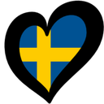
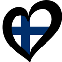

So geht's online
Hören. Schätzen. Einsortieren.
Du hörst einen Ausschnitt, ohne das Jahr zu sehen. Triffst du die richtige Stelle in deiner Zeitleiste, darfst du die Karte behalten.
In 4 Schritten
Karte ziehen
Wer dran ist, tippt auf „Karte ziehen“. Der Ausschnitt startet von selbst – auf allen Geräten gleichzeitig.
Zuhören
Bis zu 90 Sekunden Song. Interpret, Titel, Land und Jahr bleiben so lange verdeckt.
Lücke tippen
Tippe in deiner Zeitleiste die Lücke an, in die der Song gehört, und bestätige mit „Karte einloggen“. Damit legst du dich verbindlich fest.
Auflösen
Die Karte dreht sich um. Sitzt sie richtig, bleibt sie liegen – sonst verfällt sie. Danach ist der Nächste dran.
Deine Zeitleiste


Zwischen deinen Karten sitzen Lücken. Tippe eine an – der Balken wird dick – und logge die Karte ein. Richtig liegt sie, wenn das Jahr zwischen die beiden Nachbarn passt.
Gleiche Jahre zählen als passend. 336 Songs verteilen sich auf 71 Jahrgänge – zwei Karten aus demselben Jahr dürfen also in beliebiger Reihenfolge nebeneinanderliegen.
Solo oder Mehrspieler
Solo
1 Spieler · kein Code nötigEndlos Karten ziehen und die Zeitleiste so weit treiben, wie es geht. Gewertet wird, wie viele Karten am Ende liegen.
Dein Bestwert wird gespeichert. Kannst du den Highscore knacken?
Mehrspieler
2 bis 4 Spieler · je ein eigenes GerätReihum ziehen, und wer zuerst zehn Karten in der Zeitleiste hat, gewinnt. Ihr müsst nicht im selben Raum sitzen – der Song läuft bei allen synchron.
- Jeder beginnt mit einer aufgedeckten Karte. Die zählt bereits mit.
- Hast du die Karte richtig einsortiert, erweitert sie deine Zeitleiste. Falsche Karten werden aus dem Spiel entfernt.
- Drei Vetos pro Spieler: Du kannst dem, der dran ist, die Karte wegschnappen. Mehr dazu gleich.
Kartenklau per Veto
Sobald sich jemand mit „Karte einloggen“ festgelegt hat, läuft für alle anderen ein Countdown von 15 Sekunden. Ein ? in der Zeitleiste zeigt, welche Stelle gewählt wurde – das Jahr bleibt weiter verdeckt.
Wer zuerst tippt, darf die Karte des aktiven Spielers an der Stelle einsortieren, die er für richtig hält. Wird kein Veto eingelegt, wird die Karte automatisch aufgelöst.
Wann zieht ein Veto?
Du tippst die Lücke in der Zeitleiste des Spielers am Zug – dieselbe Aufgabe, an der er gerade sitzt. Die angefochtene Stelle selbst ist gesperrt, dort liegt die Karte laut ihm ja schon.
Gut zu wissen
Alle hören dasselbe
Der Ausschnitt läuft auf allen Geräten synchron. Falls dein Handy stumm bleibt: einmal auf den Bildschirm tippen, dann erlaubt der Browser den Ton.
Bestenliste & Statistik
Auf dem Startbildschirm: die Solo-Bestenliste, die Gewinnbilanz und deine Trefferquote nach Jahrzehnt und Land.
Zwischendurch aussteigen
Oben rechts „Spiel verlassen“, zweimal tippen. Die anderen spielen weiter – bleibt nur noch einer übrig, endet die Partie.
Am Rechner spielen
Ab einer gewissen Fensterbreite liegt die Karte links und die Zeitleiste rechts. Ziehst du das Fenster schmaler, kommt die Handy-Ansicht zurück.
Es kann losgehen
Ihr spielt mit den gedruckten Karten? Dann geht es hier zur Anleitung fürs Kartenspiel.